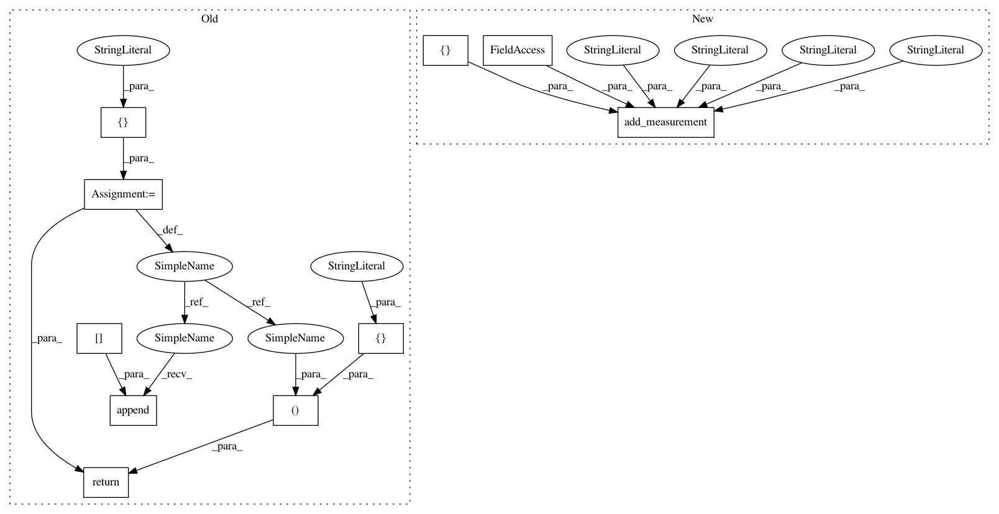

bed3f1ebd41020f9bbd31ba30b78902775eddbc8,plantcv/plantcv/morphology/segment_curvature.py,,segment_curvature,#Any#Any#Any#,17
Before Change
// Draw euclidean distance lines
cv2.line(labeled_img, points[0], points[1], rand_color[i], 1)
curvature_header = ["HEADER_CURVATURE"]
curvature_data = ["CURVATURE_DATA"]
for i, cnt in enumerate(objects):
// Calculate geodesic distance
text = "{:.3f}".format(curvature_measure[i])
w = label_coord_x[i]
h = label_coord_y[i]
cv2.putText(img=labeled_img, text=text, org=(w, h), fontFace=cv2.FONT_HERSHEY_SIMPLEX, fontScale=.4,
color=(150, 150, 150), thickness=1)
segment_label = "ID" + str(i)
curvature_header.append(segment_label)
curvature_data.append(curvature_measure[i])
outputs.measurements["morphology_data"]["segment_curvature"] = curvature_measure
// Reset debug mode
params.debug = debug
// Auto-increment device
params.device += 1
if params.debug == "print":
print_image(labeled_img, os.path.join(params.debug_outdir, str(params.device) + "_segment_curvature.png"))
elif params.debug == "plot":
plot_image(labeled_img)
return curvature_header, curvature_data, labeled_img
After Change
// Draw euclidean distance lines
cv2.line(labeled_img, points[0], points[1], rand_color[i], 1)
segment_ids = []
for i, cnt in enumerate(objects):
// Calculate geodesic distance
text = "{:.3f}".format(curvature_measure[i])
w = label_coord_x[i]
h = label_coord_y[i]
cv2.putText(img=labeled_img, text=text, org=(w, h), fontFace=cv2.FONT_HERSHEY_SIMPLEX, fontScale=.4,
color=(150, 150, 150), thickness=1)
segment_label = "ID" + str(i)
segment_ids.append(i)
outputs.add_measurement(variable="segment_curvature", trait="segment_curvature",
method="plantcv.plantcv.morphology.segment_curvature", scale="none", datatype=list,
value=curvature_measure, label=segment_ids)
// Reset debug mode
params.debug = debug
// Auto-increment device
In pattern: SUPERPATTERN
Frequency: 3
Non-data size: 10
Instances
Project Name: danforthcenter/plantcv
Commit Name: bed3f1ebd41020f9bbd31ba30b78902775eddbc8
Time: 2019-05-01
Author: haleyschuhl@gmail.com
File Name: plantcv/plantcv/morphology/segment_curvature.py
Class Name:
Method Name: segment_curvature
Project Name: danforthcenter/plantcv
Commit Name: bed3f1ebd41020f9bbd31ba30b78902775eddbc8
Time: 2019-05-01
Author: haleyschuhl@gmail.com
File Name: plantcv/plantcv/morphology/segment_path_length.py
Class Name:
Method Name: segment_path_length
Project Name: danforthcenter/plantcv
Commit Name: bed3f1ebd41020f9bbd31ba30b78902775eddbc8
Time: 2019-05-01
Author: haleyschuhl@gmail.com
File Name: plantcv/plantcv/morphology/segment_euclidean_length.py
Class Name:
Method Name: segment_euclidean_length